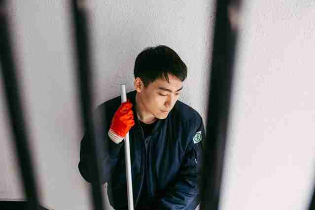

最新消息：两年前，我们报道了韩国人宋寅颢（Song In-ho）的故事，25岁的他因为宗教信仰拒服义务兵役，正在等待法院对于自己拒服兵役的判决。一年后，宋寅颢在韩国一所监狱中服刑，他的上诉遭到驳回。如今，他已获释，并在一家公司的研发部门工作。总的说来，他目前的状况还不错。我们再次登载他的故事，以此纪念5月15日的国际良心拒服兵役日（International Day of Conscientious Objectors）。
我作为耶和华见证人长大，《圣经》塑造了我的良心。我们被教导甚至要爱自己的敌人，且不应以暴制暴，这是我成为一名良心拒服兵役者的原因。我在初审中被判有罪，若上诉被拒，我将在监狱中度过18个月，但这并非我故事的终点或起点。
自出生时就被打上罪犯的烙印
在韩国，出于良心拒服兵役的人被污名化，几乎像是自我们出生起便被打上了烙印。仿佛人们知道这个孩子注定会进监狱，于是，他们把你视为准罪犯。
我的母亲是一名耶和华见证人，但我父亲最初非常反对我的信仰。他知道自己心爱的儿子最终会因拒服兵役而入狱，没有哪位父亲希望这样的事情发生。因此，我一直尽力做一个勤勉的好儿子。结果，父亲渐渐改变了想法，他成为第一个支持我上诉的人。
上小学时，我在课堂上被要求写下今后的志向，但我什么也没写，因为我知道，那是不可能实现的。既然我注定会坐牢，梦想又有何用？但我不能告诉母亲，因为这会令她心碎。
我记得一段伤心的经历，当一些同学问我：“你是耶和华见证人吗？我妈妈说你会进监狱。”直到多年以后，我才意识到这仅仅是我人生经历的序幕。
宋寅颢 我不能告诉母亲，因为这会令她心碎。
在学校被视为异类
每个学期开始的时候，老师和朋友都会问我同样的问题：“你真的要去坐牢吗？你确定自己想做耶和华见证人？”我的回答从未改变。这并非可以妥协的问题，因为这事关信仰，我会用生命捍卫它。这是我需要始终肩负的责任。
朋友会问，“你知道有多少关于你的流言蜚语吗？”这样的时刻无比苦涩，而令人痛苦的回忆太多太多。
大学里的歧视尤为严重。一次，我的朋友嘲笑我说：“宋寅颢，你不会说脏话，也不会打架，你不是男人，也不会有任何成就。”我遭受过许多嘲笑，坦白地说，这令人相当不快。我感到愤怒。我花了大量的时间思考：“这件事是正确的吗？这是懦弱吗？”
宋寅颢 自出生起，我便感到自己像是坐上了一辆注定驶向监狱的逃亡列车，十分无助，无法逃离。
毕业后，我想找一份好工作，但无法办到。由于歧视和偏见，良心拒服兵役者几乎不可能在有名气的公司里谋得一职。目前，我在父母的清洁公司帮忙。

{kind=link}
仅仅要求服兵役的替代方案
为准备庭审，我每周固定一天前往法院。在那儿，我看见小偷、窃贼、诈骗犯、强奸犯等各类罪犯，他们全都声称自己的判决不合理而要上诉。我觉得，若有人要提起上诉，那个人应是我。
于是，我下定决心。若有机会，无论代价为何，我会竭尽所能地为自己的清白辩护，哪怕这意味着我一定会被判入狱。
我愿意并准备以任何替代方式报效我的国家，无论这会有多困难。出于良心拒服兵役并不意味着我想要逃避服役。
我是一名心存感恩的公民，希望能被允许以兵役以外的某种方式报效国家。无论替代方式是什么，只要不违背良心，我都愿意承担。
这就是我们的全部请求。
在韩国，大部分的良心拒服兵役者为耶和华见证人。在该国，因良心拒服兵役而入狱的人数，比世界上其他国家的总和还要多，目前，逾600名20至24岁的男性在狱中服刑。良心拒服兵役不是罪。国际特赦组织继续呼吁韩国政府停止惩罚良心拒服兵役者，尊重他们的思想、良心及宗教信仰自由。查阅我们的新闻报道及报告《无期徒刑》（Sentenced to Life）。